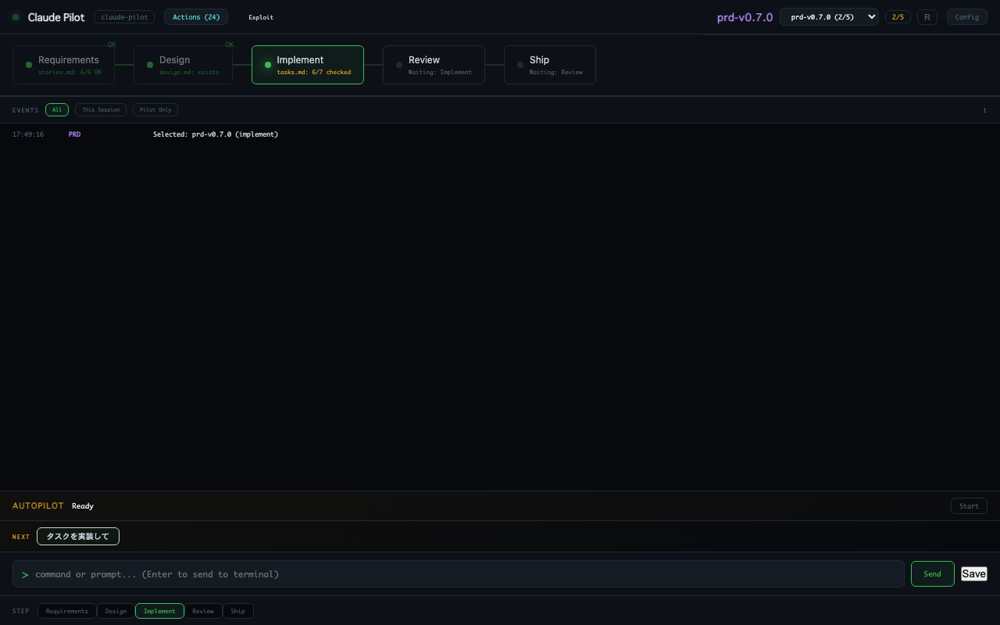
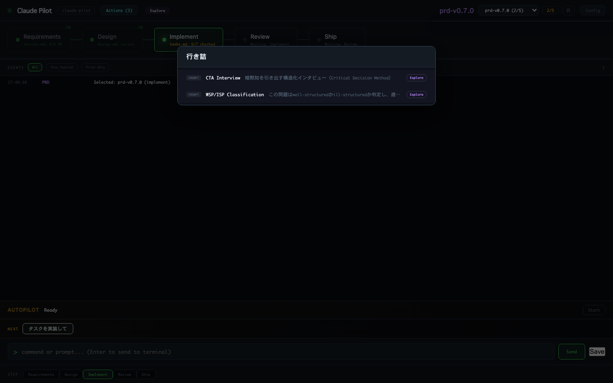
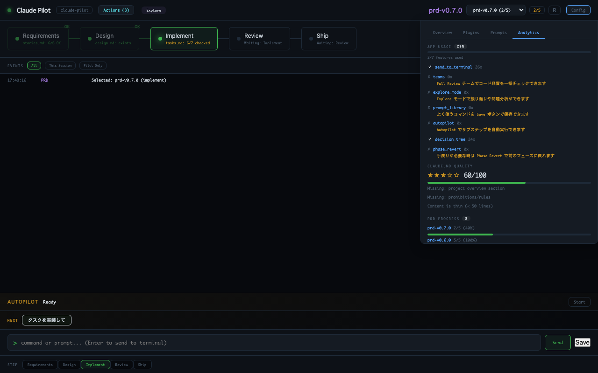

Claude Pilot
Claude Code + cmux のための開発コックピット
Unofficial community tool, not affiliated with Anthropic.

Claude Code + cmux のための開発コックピット
Unofficial community tool, not affiliated with Anthropic.

cmux workspace: Claude Code (left) + Yazi/lazygit (bottom) + Claude Pilot dashboard (right)
パイプライン操作 → コマンドパレット → Config パネル → レトロモード
各機能のスクリーンショットと説明

Requirements → Design → Implement → Review → Ship の各フェーズをリアルタイムで可視化。Gate 条件（チェックリスト、キーワード、ファイル存在）で自動進行。NEXT バーがコンテキストに応じた次のアクションを提案。

各フェーズのサブステップを詳細表示。完了状態を Gate ルールで自動評価。クリックでスキルの詳細やSend to Terminalのポップオーバーが開く。

現在のフェーズに応じたスキルを推奨。フェーズタグに基づくマッチングで、Review フェーズなら /simplify や /code-review が上位に。Teams でバッチ実行も可能。

決定木ナビゲーションで最適なツールに誘導。「行き詰まってる」「振り返りたい」「新しいタスク」から掘り下げて、CTA Interview / Retrospective / WSP-ISP 分類に到達。

全スキル横断検索に加えて、意図ファジーマッチ対応。「行き詰まってる」と入力すれば WSP/ISP 分類や CTA Interview が上位に。推奨アクションは緑ハイライト。

各機能の使用状況を追跡。活用度スコアで未使用機能を可視化し、次のステップをナビゲーション。CLAUDE.md の品質スコアやPRD 進捗も一覧表示。
スキルクリックで cmux 経由 Claude Code に直接送信。Worker プロセスで安定動作。
マーケットプレイスから検索・インストール。Enterprise モードで公式プラグインのみに制限可能。
手戻り時に前のフェーズに戻せる。理由を feedback-log.md に記録して振り返りに活用。
サブステップを順番に自動実行。cmux 経由で Claude Code セッションに送信。
よく使うプロンプトを保存・再利用。Config パネルから管理。
メタ認知的 Stop hook で振り返りを促進。開発規律ルールの自動適用。